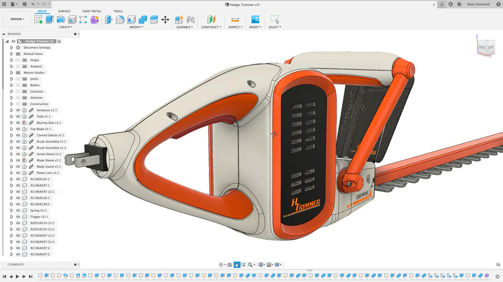
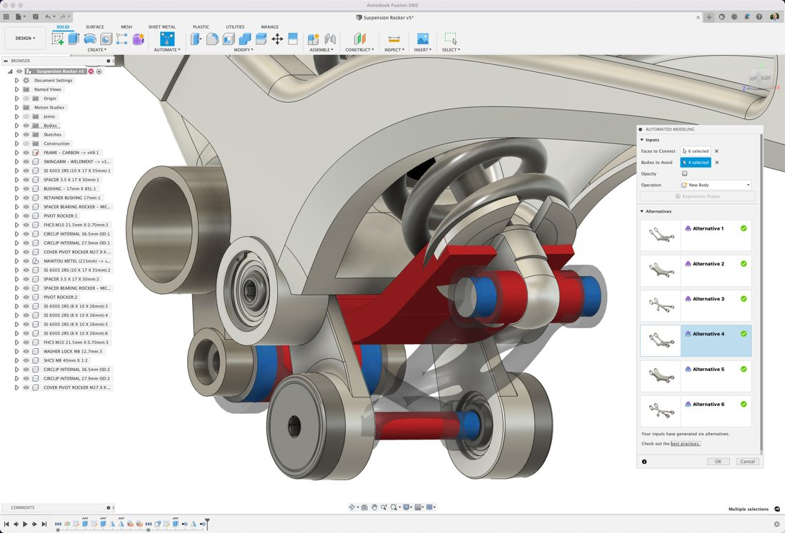
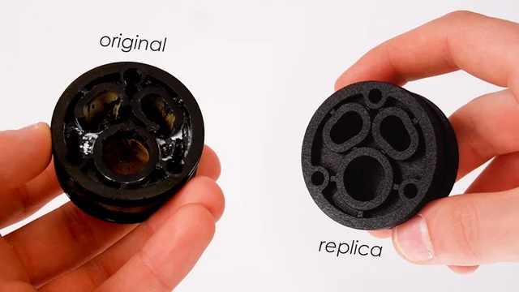
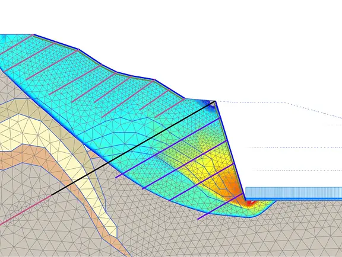
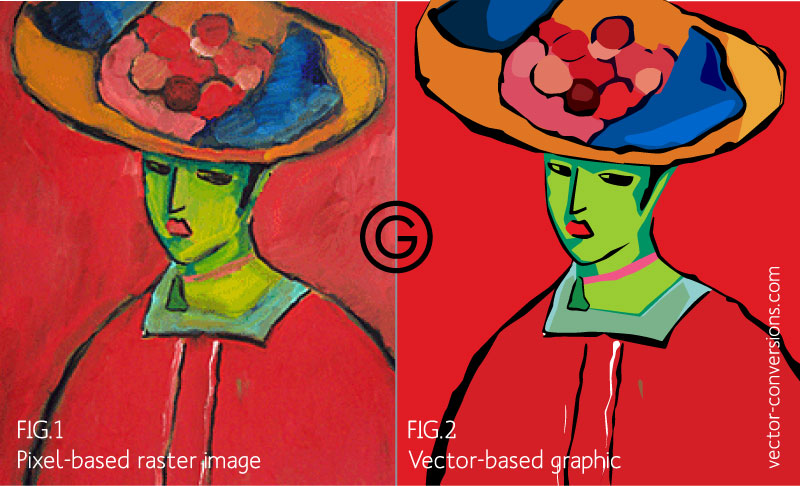
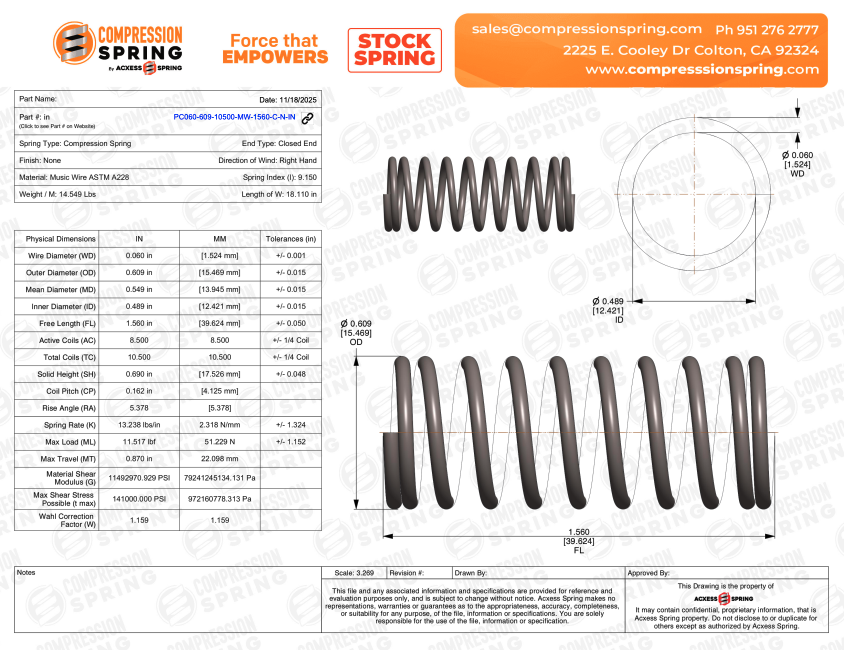

Great physical parts start with precise digital models. Whether you have a rough sketch on a napkin, a broken original component that needs to be replaced, or a conceptual idea, our design services bridge the gap between initial ideas and manufacturing-ready digital files. We specialize in parametric 3D CAD modeling, 2D vector preparation, and Design for Additive Manufacturing (DfAM) to ensure your parts print, cut and assemble cleanly.
Designing for custom fabrication requires understanding machine tolerances, material shrinkage, draft angles, and toolpath limits. By optimizing your files before sending them to our 3D printers, laser cutters, or CNC plotters, we help reduce material waste, shorten production times, and improve structural strength for functional custom parts.
We utilize industry-standard CAD, vector illustration, and CAM software tools tailored for precise custom production workflows.
| Software Suite | Capabilities | Primary Application | Supported Export Formats |
|---|---|---|---|
| Autodesk Fusion 360 | Parametric 3D CAD, mechanical assembly design, mesh repair, and technical drawings | Functional 3D parts, custom enclosures, replacement components, and mechanism modeling | STEP, STL, 3MF, OBJ, F3D, DXF |
| Vector Design Tools | 2D vector path editing, node optimization, line-weight conversion, and layout scaling | Laser cutting profiles, sticker contour lines, pen plotting artwork, and custom branding | SVG, DXF, PDF, AI, EPS |
Whether you need a full ground-up engineering design or quick adjustments to existing files, we offer tailored services across every stage of the design cycle.
A look at CAD models, digital vector artwork, and engineered part translations produced in our studio!

Parametric 3D CAD Modeling (Fusion 360)

Functional Mechanical Component Design

Reverse Engineered Replacement Part

2D Vector Line Optimization

Raster Sketch Vectorization

Technical Blueprint Spec Sheet
Quick answers to common questions about our design and CAD services.
That is plenty to get started! We can take hand drawings with key measurements, rough photos, or conceptual ideas and turn them into fully functional digital 3D models or vector files.
Yes! Bring in or send us the original broken part. We use precision digital calipers to measure key dimensions, reconstruct the original geometry in Autodesk Fusion 360, and 3D print a replacement.
Absolutely. Once the design phase is completed, we can provide you with standard STEP, STL, DXF, or SVG files so you own your design assets.
For 3D printing, we accept STEP, 3MF, or STL files. For laser cutting, pen plotting, or sticker cutting, vector files like SVG, DXF, PDF, or AI are ideal.
We design with precise mechanical tolerances built in-typically leaving 0.15mm to 0.30mm clearance for moving parts and snap-fits depending on the material and machine used.